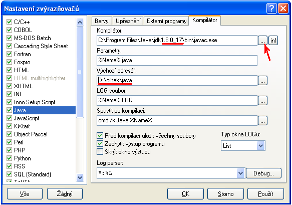

Postup instalace Java Development Kit (JDK) a nastavení PSPadu
- Na stránce firmy Oracle kliknìte na Java download (JDK). Mù�ete pøípadnì zvolit i vezi s NetBeans, pro naši práci to ale není nutné.
- Zvolte verzi pro váš operaèní systém (pravdìpodobnì Windows x86, co� je 32 bitová verze).
- Po sta�ení nainstalujte JDK (nic není potøeba nastavovat, staèí jen odklikat Next, Next, ...).
- Stáhnìte si a nainstalujte editor PSPad (pokud jej ještì nemáte nainstalovanı).
- Nyní v PSPadu zvolte z menu Soubor -> Novı... a vyberte typ Java. Poté z zvolte z menu Nastavení -> Nastavení zvırazòovaèù... a v dialogovém oknì kliknìte na zálo�ku Kompilátor. Nyní vyplòte jednotlivá pole formuláøe podle obrázku:

- Pozor! V poli Kompilátor musíte mít èíslo verze JDK, kterou jste nainstalovali (èervenì podtr�eno). Nejjednodušší je si cestu k souboru javac.exe postupnì naklikat pøes tlaèítko na obrázku oznaèené èervenou šipkou.
- V poli Vıchozí adresáø si nastavte cestu ke slo�ce na vašem disku, kam budete ukládat vámi vytvoøené soubory v jazyce Java. Nejlepší je si pro tyto úèely vytvoøit novou slo�ku s názvem java.
- Poté co jste vše na zálo�ce Kompilátor øádnì nastavili, potvrïte dialog tlaèítkem OK.
- Nyní zkuste provést kompilaci (pøeklad) vášeho prvního programu. Zkopírujte zdrojovı kód první ukázky (Ahoj svìte) ze stránky s úlohami do PSPadu a ulo�te jej pod názvem Prvni.java do slo�ky java, kterou jste si pøed chvílí vytvoøili. Pozor, název souboru musí mít první písmeno velké! Všimnìte si, �e název souboru se pøesnì shoduje s názvem tøídy ve zdrojovém kódu ukázky (class Prvni).
- Nyní spus�te kompilaci klávesovou zkratkou Ctrl + F9. Pokud je vše v poøádku, tak se po chvíli otevøe èerné okno (konsole) a do nìj se vypíše text Ahoj svìte.